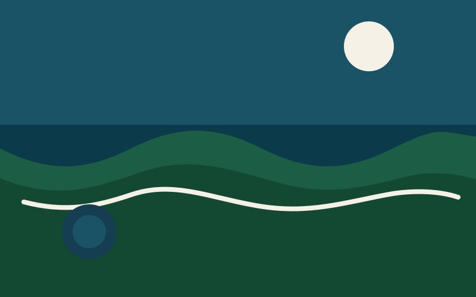

Look
Start with a featured lake, or open the full trail list.

Pick a nearby lake loop or city trail. Each place lists the neighborhood, distance, and path surface so you can choose a walk or ride that fits the time you have.
Start with a featured lake, or open the full trail list.
Check the miles, the neighborhood, and whether the path is paved.
Keep favorites in the planner. They stay in this browser.